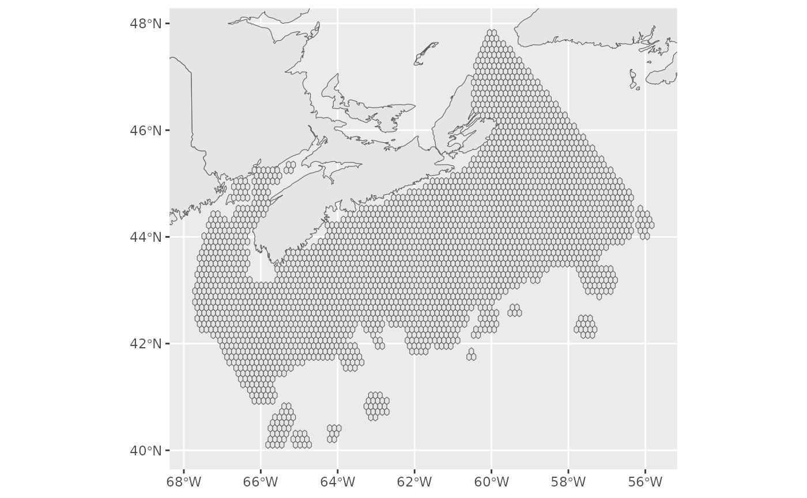

Example workflow - DFO Maritimes MPAs
workflow_MPAs.Rmd
library(marxanr)
library(ggplot2)
library(dplyr)
#>
#> Attaching package: 'dplyr'
#> The following objects are masked from 'package:stats':
#>
#> filter, lag
#> The following objects are masked from 'package:base':
#>
#> intersect, setdiff, setequal, union
library(sf)
#> Linking to GEOS 3.10.2, GDAL 3.4.1, PROJ 8.2.1; sf_use_s2() is TRUEThis vignette provides step by step guidance to take spatial data layers, transform these into Marxan inputs, run Marxan, then load and interpret the results.
Loading data layers
Spatial data
data(pu)
# landmasses for plotting
data(land)
# x and y limits to make nicer plots
xlim <- st_bbox(pu)[c(1,3)]
ylim <- st_bbox(pu)[c(2,4)]
ggcoords <- coord_sf(xlim=xlim,
ylim=ylim)
basemap <- ggplot(land)+
geom_sf()
basemap+
geom_sf(data=pu)+
ggcoords
Marxan data
Data for this example, which are included in this package, are derived from Serdynska et al. 2021 will be used in this example. These data are the available bioregional-scale ecological and human use data used to inform draft Marine Protected Area (MPA) design for the Scotian Shelf-Bay of Fundy Bioregion. Please see the original technical report for further details.
While the input data are “real”, the following example is NOT to be interpreted in any way as a suggestion for real MPA placement. The example is to show that you CAN run Marxan via R with real data. The example has not been properly paramaterized or optimized.
data("spec")
data("puvspr")
data("pu_dat")
data("bound")
head(spec)
#> id prop spf name
#> 1 1 0.3 1000 Boltenia_KDE
#> 2 2 0.3 1000 LargeGorgonian_KDE
#> 3 3 0.3 1000 LargeGorgonian_SDM
#> 4 4 0.3 1000 OtherSponges_noVazella_KDE
#> 5 5 0.3 1000 SandDollar_KDE
#> 6 6 0.3 1000 SeaPens_KDE
head(puvspr)
#> # A tibble: 6 × 3
#> # Groups: species [1]
#> species pu amount
#> <int> <chr> <dbl>
#> 1 1 1695 16481748.
#> 2 1 1715 36180234.
#> 3 1 1718 4545594.
#> 4 1 1738 14234663.
#> 5 1 1739 224554.
#> 6 1 1741 50303463.
head(pu_dat)
#> # A tibble: 6 × 5
#> id cost status xloc yloc
#> <chr> <dbl> <dbl> <dbl> <dbl>
#> 1 1 10000 0 42.8 -67.7
#> 2 2 10179. 0 43.0 -67.7
#> 3 3 10000 0 42.5 -67.7
#> 4 4 10000 0 42.7 -67.7
#> 5 5 11164. 0 42.9 -67.7
#> 6 6 10041. 0 43.1 -67.7
head(bound)
#> id1 id2 amount
#> 1 1 1 1
#> 2 1 4 1
#> 3 1 5 1
#> 4 1 10 1
#> 5 2 2 1
#> 6 2 5 1Creating a Marxan project folder
# name for new scenario
scen <- "MPAtest"
# create a folder for a new scenario
createMarxanFolder(scen=scen,dialog = FALSE)
# download marxan if necessary
downloadMarxan(path = scen)
# write marxan files to folder
write.csv(spec,file.path(scen,"input","spec.dat"),quote = FALSE,row.names = FALSE)
write.csv(puvspr,file.path(scen,"input","puvspr.dat"),quote = FALSE,row.names = FALSE)
write.csv(pu_dat,file.path(scen,"input","pu.dat"),quote = FALSE,row.names = FALSE)
write.csv(bound,file.path(scen,"input","bound.dat"),quote = FALSE,row.names = FALSE)
# create new input parameters
input <- newParams(BLM=10^5,NUMREPS = 50L,SCENNAME = scen)
writeParams(inputdat = input,file = file.path(scen,"input.dat"))
# run marxan
runMarxan(marxanpath = scen,
inputdatfile = "input.dat")
# unlink(scen,recursive = TRUE) # if necessary